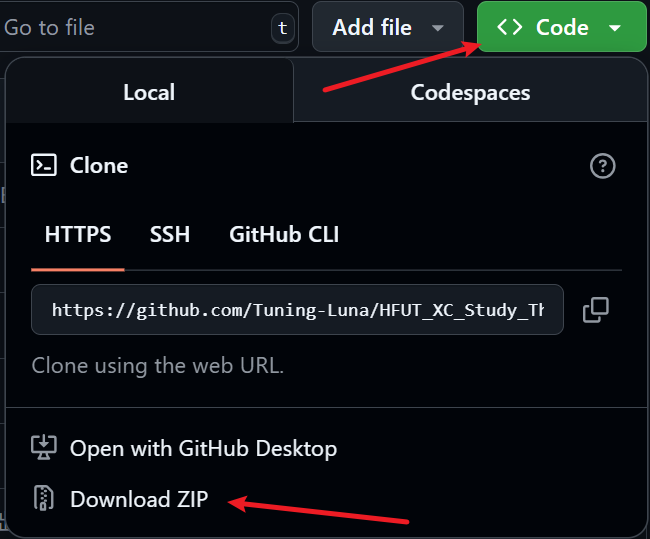
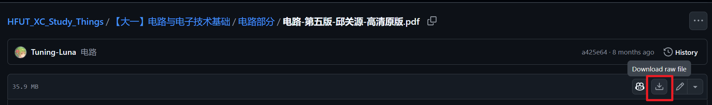

HFUT-XC CS 学习资料仓库
写在前面
本仓库计划存放合肥工业大学宣城校区（HFUT-XC）计算机科学与技术（CS）大一到大四的学习资料，有问题欢迎提issues
食用方法
全部下载
注：截止2025.8.7，仓库总大小为 7.33 GB ，其中资料约占 3.92 GB，确保有足够的内存下载
点击 Code / Download ZIP 进行全部下载

或者克隆整个仓库：
确保电脑上有git环境，打开cmd，运行
git clone https://github.com/Tuning-Luna/HFUT_XC_Study_Things.git
克隆整个仓库
部分下载
进入需要下载的文件，选择Download raw file 即可

或者使用插件：
使用GitZip for GitHub 插件，安装插件并配置好后，文件夹和文件前面会多出复选框，选择需要的勾上并下载即可
资料目录
大一
| 课程名称 | 包含内容 |
|---|---|
| 高等数学 | 教材，PPT，作业习题，历年真题 |
| 线性代数 | 教材，PPT，作业习题，历年真题，练习题 |
| 数据结构 | 教材，PPT，课后习题答案，真题，实验，课设 |
| Java | 实验，课后习题（有些资料因为体积原因无法上传） |
| 电路与电子技术基础 | 教材，PPT，实验 |
| 大学物理 | 教材，PPT，作业习题以及解答，历年真题，习题册 |
大二
| 课程名称 | 包含内容 |
|---|---|
| Python | PPT，实验，课设 |
| 程序设计艺术 | 教材，PPT，实验，小组汇报题目 |
| 机器人技术 | PPT，作业，实验 |
| 离散数学 | PPT，习题讲解，报告，试卷 |
| 数字逻辑 | PPT，实验，作业习题解答 |
| 马克思主义基本原理 | 教材（2023版），报告 |
| 计算方法 | PPT，实验，复习笔记，课本 |
| 概率论与数理统计 | PPT，教材，历年真题，习题册&解答 |
| 汇编 | PPT，教材，实验，复习资料，真题，习题答案 |
| 大学物理实验 | 试卷，实验报告，复习提纲 |
| 嵌入式系统原理 | PPT，试卷，课设，实验，考试资料 |
| EDA实训学习 | 成品，辅助学习资料，报告 |
| 编译原理 | PPT，真题，复习资料，实验，课设 |
| 机器学习 | PPT，大作业，学习资料，作业 |
| 计算机组成原理 | PPT，真题，复习资料，实验 |